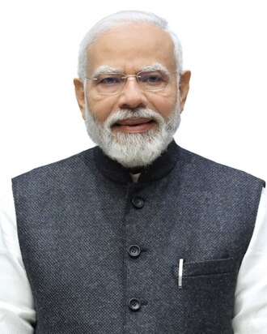
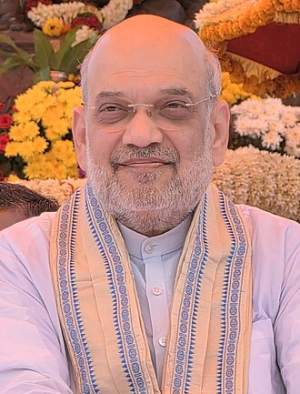
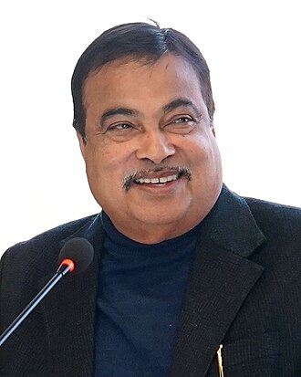
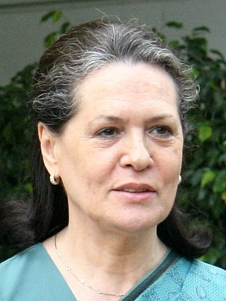
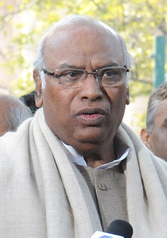
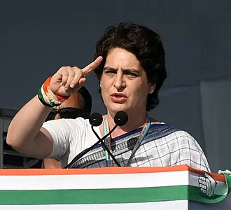
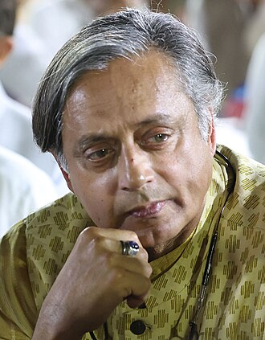
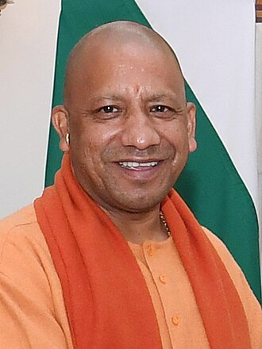
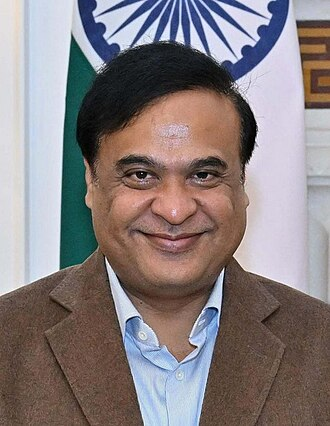

Affidavit comparison
Declared net worth: BJP vs Congress key figures
This page uses election-affidavit data from MyNeta / ADR candidate pages. Net worth here means declared assets minus declared liabilities from the affidavit used for that leader. Office, family, and religion/caste notes are kept separate and sourced in the table itself.

Summed comparison
Summed declared net worth of the major figures used here
This compares the same five BJP figures and five Congress figures used in the table below. It is not a party-wide total; it is a like-for-like snapshot of the selected major figures on this page.[3]
Congress total exceeds BJP by Rs 63,97,28,222≈ Rs 63.97 crore[3]
Main pair: Modi and Rahul Gandhi
| Photo | Person | Party | Affidavit used | Declared assets | Declared liabilities | Computed net worth | Current / major office | Marital status / children | Religion / caste (if provided) |
|---|---|---|---|---|---|---|---|---|---|
 |
Narendra Modi | BJP | Lok Sabha 2024, Varanasi[1] | Rs 3,02,06,889[1] | Nil[1] | Rs 3,02,06,889 ≈ Rs 3.02 crore[3] |
Prime Minister of India (since 2014)[7] | Married / separated; children not listed in source used[7] | Hindu; OBC background stated[7] |
| Rahul Gandhi | INC | Lok Sabha 2024, Rae Bareli[2] | Rs 20,39,61,862[2] | Rs 54,54,314[2] | Rs 19,85,07,548 ≈ Rs 19.85 crore[3] |
Leader of the Opposition in Lok Sabha (since 2024)[10] | Unmarried; no children listed in source used[10] | Not stated in the affidavit page or biographical source used here[10] |
Major party figures
I used a small set of central figures from each party, prioritizing people with readable affidavit pages and clear current public roles.
| Photo | Person | Party | Latest affidavit used | Declared assets | Declared liabilities | Computed net worth | Current / major office | Marital status / children | Religion / caste (if provided) |
|---|---|---|---|---|---|---|---|---|---|
| Narendra Modi | BJP | Lok Sabha 2024[1] | Rs 3,02,06,889[1] | Nil[1] | Rs 3,02,06,889[3] | Prime Minister of India (since 2014)[7] | Married / separated; children not listed in source used[7] | Not stated in source set used here[7] | |
 |
Amit Shah | BJP | Lok Sabha 2024, Gandhinagar[4] | Rs 65,67,12,498[4] | Rs 42,09,587[4] | Rs 65,25,02,911 ≈ Rs 65.25 crore[3] |
Union Home Minister (since 2019)[8] | Married; 1 child[8] | Hindu; Bania family background stated[8] |
 |
Nitin Gadkari | BJP | Lok Sabha 2024, Nagpur[5] | Rs 28,03,17,321[5] | Rs 6,22,30,174[5] | Rs 21,80,87,147 ≈ Rs 21.81 crore[3] |
Union Minister for Road Transport and Highways (since 2014)[9] | Married; 3 children[9] | Marathi Brahmin family background stated[9] |
| Rahul Gandhi | INC | Lok Sabha 2024, Rae Bareli[2] | Rs 20,39,61,862[2] | Rs 54,54,314[2] | Rs 19,85,07,548 ≈ Rs 19.85 crore[3] |
Leader of the Opposition in Lok Sabha (since 2024)[10] | Unmarried; no children listed in source used[10] | Not stated in the affidavit page or biographical source used here[10] | |
 |
Sonia Gandhi | INC | Rajya Sabha current-member affidavit[6] | Rs 12,53,76,822[6] | Nil[6] | Rs 12,53,76,822 ≈ Rs 12.54 crore[3] |
Member of Parliament, Rajya Sabha (since 2024)[11] | Widowed; 2 children[11] | Roman Catholic Christian family by birth; caste not stated[11] |
 |
Mallikarjun Kharge | INC | Lok Sabha 2019, Gulbarga[12] | Rs 15,77,22,896[12] | Rs 31,22,000[12] | Rs 15,46,00,896 ≈ Rs 15.46 crore[3] |
President of the Indian National Congress (since 2022)[13] | Married; 5 children[13] | Dalit family background stated; religion not clearly stated here[13] |
 |
Priyanka Gandhi Vadra | INC | Lok Sabha 2024 bye-election, Wayanad[14] | Rs 77,54,77,352[14] | Rs 12,10,31,711[14] | Rs 65,44,45,641 ≈ Rs 65.44 crore[3] |
Member of Parliament, Lok Sabha (since 2024)[15] | Married; 2 children[15] | Not clearly stated in the affidavit page or biographical source used here[15] |
 |
Shashi Tharoor | INC | Lok Sabha 2024, Thiruvananthapuram[16] | Rs 56,06,56,126[16] | Nil[16] | Rs 56,06,56,126 ≈ Rs 56.07 crore[3] |
Chairman, Standing Committee on External Affairs (since 2024)[17] | Previously married; 2 children[17] | Not clearly stated in the affidavit page or biographical source used here[17] |
 |
Yogi Adityanath | BJP | Uttar Pradesh 2022, Gorakhpur Urban[18] | Rs 1,54,94,054[18] | Nil[18] | Rs 1,54,94,054 ≈ Rs 1.55 crore[3] |
Chief Minister of Uttar Pradesh (since 2017)[19] | Unmarried; no children listed in source used[19] | Hinduism stated; caste not clearly stated here[19] |
 |
Himanta Biswa Sarma | BJP | Assam 2021, Jalukbari[20] | Rs 17,27,65,162[20] | Rs 3,51,97,352[20] | Rs 13,75,67,810 ≈ Rs 13.76 crore[3] |
Chief Minister of Assam (since 2021)[21] | Married; 2 children[21] | Not clearly stated in the affidavit page or biographical source used here[21] |
Method note
- Net worth here is computed as declared assets minus declared liabilities from the affidavit page cited for that person.
- For BJP leaders, I used Narendra Modi, Amit Shah, Nitin Gadkari, Yogi Adityanath, and Himanta Biswa Sarma as major figures with readable affidavit records.
- For INC leaders, I used Rahul Gandhi, Sonia Gandhi, Mallikarjun Kharge, Priyanka Gandhi Vadra, and Shashi Tharoor as major figures with usable affidavit records.
- The religion/caste column is intentionally cautious: where the affidavit page or the biographical source used did not clearly state it, I marked it as not stated.
Source notes
- MyNeta / ADR: Narendra Modi, Lok Sabha 2024, Varanasi — declared assets Rs 3,02,06,889; liabilities Nil.
- MyNeta / ADR: Rahul Gandhi, Lok Sabha 2024, Rae Bareli — declared assets Rs 20,39,61,862; liabilities Rs 54,54,314.
- Arithmetic check performed locally from the affidavit figures for the computed net-worth numbers shown on this page.
- MyNeta / ADR: Amit Shah, Lok Sabha 2024, Gandhinagar — declared assets Rs 65,67,12,498; liabilities Rs 42,09,587.
- MyNeta / ADR: Nitin Jairam Gadkari, Lok Sabha 2024, Nagpur — declared assets Rs 28,03,17,321; liabilities Rs 6,22,30,174.
- MyNeta / ADR: Sonia Gandhi, Rajya Sabha current-member affidavit — declared assets Rs 12,53,76,822; liabilities Nil.
- Wikipedia: Narendra Modi — used for current office/family fields shown here.
- Wikipedia: Amit Shah — used for current office/family fields shown here.
- Wikipedia: Nitin Gadkari — used for current office/family fields shown here.
- Wikipedia: Rahul Gandhi — used for current office/family fields shown here.
- Wikipedia: Sonia Gandhi — used for current office/family fields shown here.
- MyNeta / ADR: Mallikarjun Kharge, Lok Sabha 2019, Gulbarga — declared assets Rs 15,77,22,896; liabilities Rs 31,22,000.
- Wikipedia: Mallikarjun Kharge — used for current office/family/religion-background fields shown here.
- MyNeta / ADR: Priyanka Gandhi Vadra, Lok Sabha 2024 bye-election, Wayanad — declared assets Rs 77,54,77,352; liabilities Rs 12,10,31,711.
- Wikipedia: Priyanka Gandhi — used for current office and family fields shown here.
- MyNeta / ADR: Shashi Tharoor, Lok Sabha 2024, Thiruvananthapuram — declared assets Rs 56,06,56,126; liabilities Nil.
- Wikipedia: Shashi Tharoor — used for current office and family fields shown here.
- MyNeta / ADR: Adityanath, Uttar Pradesh 2022, Gorakhpur Urban — declared assets Rs 1,54,94,054; liabilities Nil.
- Wikipedia: Yogi Adityanath — used for current office/family/religion fields shown here.
- MyNeta / ADR: Himanta Biswa Sarma, Assam 2021, Jalukbari — declared assets Rs 17,27,65,162; liabilities Rs 3,51,97,352.
- Wikipedia: Himanta Biswa Sarma — used for current office and family fields shown here.